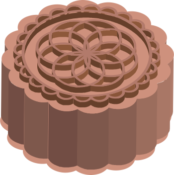
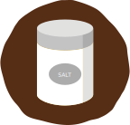
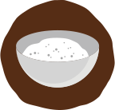
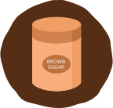
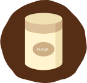

Mooncake Receipe
- MIX TOGETHER THE INGREDIENTS FOR THE DOUGH.
- PREPARE THE SALTED EGG YOLKS.
- PREHEAT THE OVEN TO 350 DEGREES FAHRENHEIT (180 DEGREES CELSIUS).
- SEPARATE THE DOUGH INTO 6 EQUAL PARTS.
- ASSEMBLE YOUR MOONCAKE.
- OVEN YOUR MOONCAKES 10-12 MINUTES.
Mooncake Receipe

Golden syrup
60 g

Egg Yolk
1
Vegatable Oil
28 g

Alkaline water
1/2 tsp, available at Asian grocers
Egg yolk
6 each, salted

Rose-flavoured cooking wine
1 tbsp, available at Asian grocers
Egg white
2 tbsp

Flour
100 g, all-purpose variety
Lotus seed paste
420 g